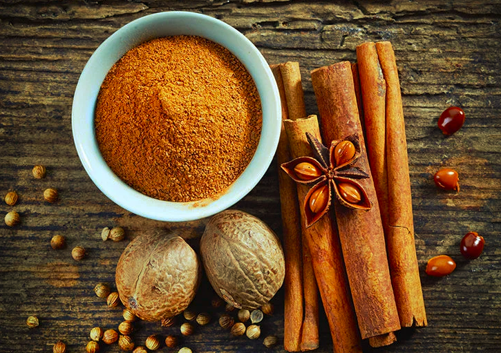
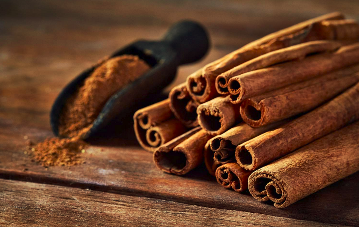
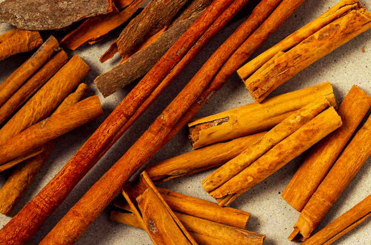
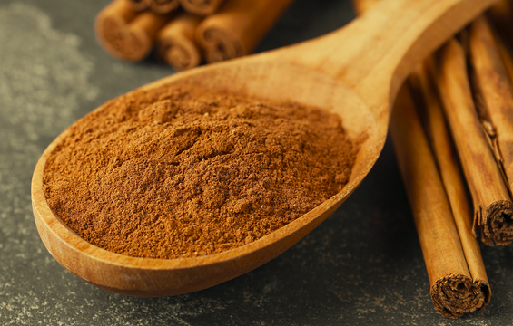

Cinnamon is made by cutting the stems of cinnamon trees. The inner bark is then extracted and the woody parts removed. When it dries, it forms strips that curl into rolls, called cinnamon sticks. These sticks can be ground to form cinnamon powder. The distinct smell and flavor of cinnamon are due to the oily part, which is very high in the compound cinnamaldehyde.
Antioxidants protect your body from oxidative damage caused by free radicals. Cinnamon is loaded with powerful antioxidants, including polyphenols. One study found that cinnamon supplementation could significantly increase antioxidant levels in the blood while reducing levels of markers used to measure inflammation, such as C-reactive protein.
Cinnamon may improve some key risk factors for heart disease, including cholesterol, triglycerides, and blood pressure. Cinnamon has been shown to significantly increase sensitivity to the hormone insulin, which may improve blood sugar control. By increasing insulin sensitivity, cinnamon can lower blood sugar levels and support better blood sugar control.
Apart from the beneficial effects on insulin resistance, cinnamon can lower blood sugar through several other mechanisms. First, cinnamon has been shown to decrease the amount of sugar that enters your bloodstream after a meal. It does this by interfering with numerous digestive enzymes, which slows the breakdown of carbohydrates in your digestive tract.
